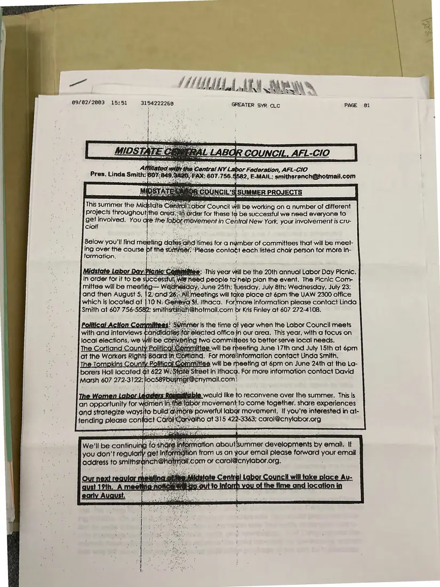

Newsletter, 1 page
Midstate Central Labor Council's Summer Projects (fax)
Faxed September 2, 2003
A one-page notice, faxed September 2, 2003, describing the council's summer committees: Labor Day Picnic planning, political action committees in Cortland and Tompkins counties, and a women labor leaders roundtable.
Download or cite this itemPages


(open zoom view)Read the page text (machine-read, many errors)
This text was generated automatically from the photograph and has not been corrected. The image is the authoritative record.
yf iy if ft (fii iif {at y a A ih his,
{ if Pall Ca ey ny iii Ca NA Me
09/02/2003 15:51 3154222260 GREATER SYR CLC PAGE @1
rc Council il be wore on a number of different
. Bec IoManedt th
Sed Youd He the a. evement in Central New York, your involvement is cru-
ia Heke
Below you'll find me ies oe te for a nymber 0 of committees that will be meet-
ing over the course ‘ie st,
formation, : [:
\G&d people tahelp pian the event. The Picnic Com
ay,‘June 25th: LSet July 8th; Wednesday, July 23:
| Political Action Commit yemmer Is the time of year when the Labor Council meets
with and interviews 4 2G Lattis for cted office: jn our area. This year, wilh a focus on
local Boer we will:be Conve twa committees to better serve local needs.
|The Cortland Coun gmrnittee will be meeting . June 17th and July 15th at 6pm
Jat the ‘Workers Right r . For moretinformation contact Linda Smith.
he To mpk oun tyP me, 66 Will be rheeting at 6pm on June 24th at the La-
its Ir eet in yasice 2 sey more information contact David
The Women Lab: , Le ' sis , would like to pieccovers over the summer, This is
an opportunity for v Ni el
> fart d Ll 1 UKE plac = bes
OL Ihe Time Gna loca;ion ipSee something wrong, or recognize a person or event? Send a correction. If you hold rights in this item or think it should not be public, write to the same address.